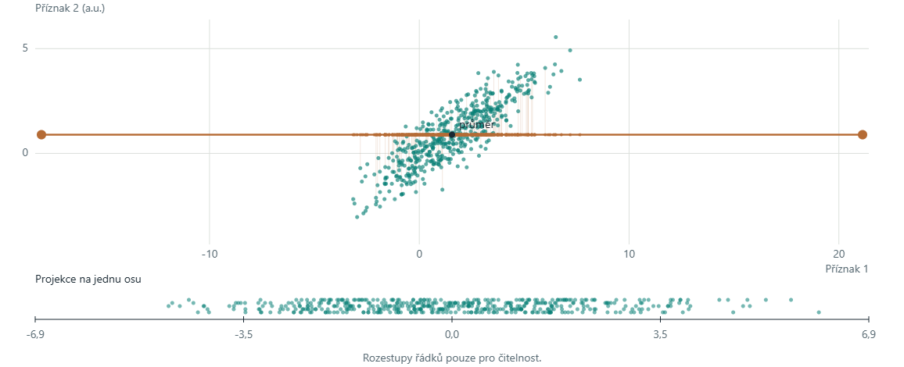
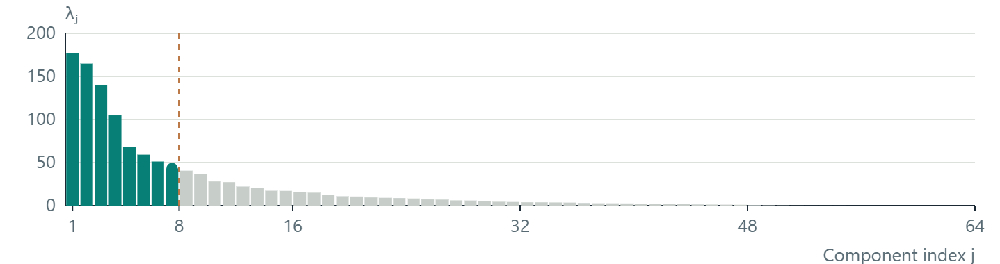
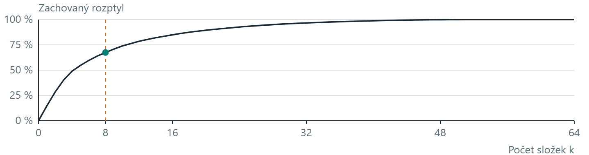
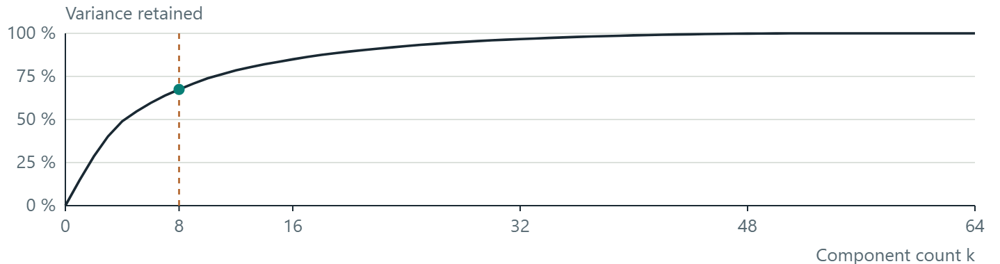

NI-ROZ / ANI-ROZ · CvičeníTutorial 1
Příznaky a PCAFeatures and PCA
Nejprve uvidíme, co se s daty děje. Potom změnu popíšeme čísly a maticemi.First observe what happens to the data. Then describe the change with numbers and matrices.
90 minut · česky a anglicky · všechny ukázky fungují bez přihlášeníminutes · Czech and English · no sign-in required
- Vzorek a příznak; projekce bodů na otáčenou osu.Samples, features and projection onto a rotating axis.
- Av, centrování, rozptyl, kovariance a vlastní směry.Av, centering, variance, covariance and eigenvectors.
- Výpočet PC1 a volba počtu komponent při rekonstrukci obrázků.Calculate PC1 and choose the number of components for image reconstruction.
U každého klikátka nejprve odhadněte výsledek změny. Pak změňte jeden parametr a vysvětlete, co se stalo.For each interactive example, predict the effect first. Then change one parameter and explain the result.
Vzorek, příznak a vektorSample, feature and vector
Vzorek je jeden měřený objekt. Příznak je jedno jeho číselné měření. Dvě měření vzorku C tvoří příznakový vektor x₃ = (3, 2).A sample is one observed object. A feature is one numerical measurement of it. The two measurements of sample C form the feature vector x₃ = (3, 2).
Například první příznak může být šířka a druhý výška. Zde jde o syntetická čísla bez fyzikálních jednotek.For example, the first feature could be width and the second height. Here the numbers are synthetic and have no physical units.
| VzorekSample | x₁ | x₂ |
|---|---|---|
| A | 1 | 1 |
| B | 2 | 2 |
| C | 3 | 2 |
| D | 4 | 3 |
Datová matice X má n = 4 řádky a d = 2 sloupce. Řádek patří vzorku, sloupec příznaku. Štítek třídy y je jiná informace; do této matice příznaků ho nepřidáváme.The data matrix X has n = 4 rows and d = 2 columns. A row is a sample and a column is a feature. A class label y is separate information; it is not another column of this feature matrix.
Jeden řádek tabulky odpovídá jednomu bodu v grafu.One table row corresponds to one point in the plot.
PCA: otočná osaPCA: a rotating axis
Každá tečka má dva číselné příznaky. Oranžová osa jí přiřadí jedinou souřadnici, kterou ukazuje spodní graf.Each dot has two numerical features. The orange axis assigns it one coordinate, shown in the lower plot.

Vektory mají délku 1. Obě šipky zvětšujeme stejně pro čitelnost. λ je rozptyl v příslušném směru.The vectors have unit length. Both arrows share one display scale for readability. λ is the variance along its direction.
λ₁ = λ₂: zobrazená kolmá dvojice je pouze jedna z rovnocenných voleb.λ₁ = λ₂: the displayed perpendicular pair is only one of many equally valid choices.
480 syntetických bodů. Měřítko spodní projekce se při otáčení nemění. Variance je výběrový rozptyl souřadnic po projekci.480 synthetic points. The lower projection scale stays fixed as the axis rotates. Variance is the sample variance of the projected coordinates.
Vysvětlení: Tečka, projekce a varianceExplanation: Point, projection and variance
Horní graf ukazuje původní body a jejich kolmé projekce na oranžovou osu. Spodní graf rozbalí souřadnice projekcí na vodorovnou stupnici. Malé svislé rozestupy spodních teček slouží jen čitelnosti, žádný další příznak neznamenají.The upper plot shows original points and their perpendicular projections onto the orange axis. The lower plot lays the projection coordinates out on a horizontal scale. Small vertical offsets between lower dots only improve visibility. They do not encode another feature.
Variance měří rozptyl souřadnic podél zvolené osy. Procento vedle ní porovnává tento rozptyl s celkovým rozptylem obou původních příznaků. Nejprve zkuste maximum najít ručně. Pak odkryjte vlastní vektory a porovnejte svůj směr s u₁.Variance measures the spread of coordinates along your chosen axis. The percentage compares it with the total variance of both original features. First search for the maximum manually. Then reveal the eigenvectors and compare your direction with u₁.
Při otočení osy o 180° se znaménka souřadnic obrátí, ale jejich rozptyl zůstane stejný.Turning the axis by 180° reverses the coordinate signs while leaving their variance unchanged.
Násobení matice vektoremMatrix–vector multiplication
Zadejte čtyři prvky matice A a dvě souřadnice vektoru v. Výsledek w = Av se ihned přepočítá. Vektor zde zapisujeme jako sloupec: matice násobí zleva.Enter the four entries of A and the two coordinates of v. The result w = Av updates immediately. Here v is a column vector: the matrix acts from the left.
Lze psát desetinnou čárku i tečku. Vektor změní také kliknutí do grafu nebo šipky při zaměření grafu.Both decimal dots and commas are accepted. Click in the plot to change v, or focus the plot and use the arrow keys.
Každá souřadnice výsledku je skalární součin jednoho řádku A s celým vektorem v. Vynásobíme odpovídající dvojice čísel a sečteme je.Each output coordinate is the dot product of one row of A with the whole vector v. Multiply matching entries, then add the products.
Co znamenají sloupce matice?What do the columns mean?
První sloupec je obraz e₁ = (1; 0), druhý obraz e₂ = (0; 1). Výsledek Av je jejich kombinace s vahami v₁ a v₂:The first column is the image of e₁ = (1; 0); the second is the image of e₂ = (0; 1). Av combines these columns with weights v₁ and v₂:
Modrá šipka je původní vektor, oranžová se mění. Šedá mřížka zůstává jako reference, zelená ukazuje transformaci. Obě osy mají stejné měřítko; rozsah se přizpůsobuje číslům.The blue arrow is the input; the orange arrow changes. The grey grid stays as a reference; the green grid shows the transformation. Both axes use the same scale; their limits adapt to the numbers.
Posuvník pouze plynule spojí v a Av: w(t) = (1 − t)v + tAv. Pro t = 0 vidíme v, pro t = 1 výsledek Av. Nejde o opakované násobení maticí.The slider linearly connects v and Av: w(t) = (1 − t)v + tAv. At t = 0 we see v; at t = 1 we see Av. This is not repeated matrix multiplication.
Průměr a centrováníMean and centering
Průměrný vektor popisuje střed dat. Spočítáme průměr každého sloupce zvlášť.The mean vector describes the data centre. Average each column separately.
μ = (2,5; 2)
xᶜᵢ = xᵢ − μ
Centrování posune střed do počátku. Vzdálenosti mezi body ani tvar mraku se nezmění. Například C se změní z (3, 2) na (0,5; 0).Centering moves the mean to the origin. Pairwise distances and the shape of the cloud remain unchanged. For example, C changes from (3, 2) to (0.5, 0).
Rozptyl: jak daleko od průměru?Variance: how far from the mean?
Odchylky samotné se vyruší: jejich součet je nula. Proto je umocníme. U výběrového rozptylu dělíme součet čtverců číslem n − 1.The deviations themselves cancel: they sum to zero. We therefore square them. For sample variance, divide the sum of squared deviations by n − 1.
Směrodatná odchylka s je odmocnina z rozptylu s². Má stejné jednotky jako příznak. Rozptyl má jednotky na druhou.Standard deviation s is the square root of variance s². It has the same units as the feature. Variance has squared units.
Zde používáme n − 1 konzistentně ve všech příkladech. Popisný rozptyl celé konečné populace lze definovat s dělitelem n; nemíchejte obě konvence.We consistently use n − 1 in these examples. Descriptive variance of a complete finite population can use n instead; keep the conventions distinct.
Kovariance: mění se příznaky společně?Covariance: do the features vary together?
Když mají dvě odchylky stejné znaménko, jejich součin je kladný. Opačná znaménka dávají záporný součin. Průměrujeme tyto součiny, opět s dělitelem n − 1.Two deviations with the same sign have a positive product. Opposite signs give a negative product. Average these products, again using n − 1 as the divisor.
Kovarianční maticeCovariance matrix
Kovarianční matice C uspořádá rozptyly a kovariance všech příznaků. Má rozměr d × d, zde 2 × 2. Tlačítkem vyberte její prvek.The covariance matrix C collects the variances and covariances of all features. Its size is d × d, here 2 × 2. Select an entry with the buttons.
Na diagonále jsou rozptyly. Mimo diagonálu jsou kovariance. C je symetrická, protože Δx₁Δx₂ = Δx₂Δx₁. Není to tabulka vzorků ani matice klasifikačních chyb.Diagonal entries are variances. Off-diagonal entries are covariances. C is symmetric because Δx₁Δx₂ = Δx₂Δx₁. It is neither the sample table nor a confusion matrix.
Xᶜ obsahuje centrované vzorky v řádcích. Horní T znamená transpozici, tedy prohození řádků a sloupců. Vynásobením dostaneme všechny součty součinů odchylek najednou.Xᶜ contains centred samples in rows. The superscript T denotes transpose: exchanging rows and columns. The matrix product collects every sum of products of deviations at once.
Každý vzorek nyní obsahuje tři příznaky (x₁, x₂, x₃). Tabulka dat má n řádků a 3 sloupce; kovarianční matice má 3 × 3 prvky. Upravte čísla a potom vyberte prvek C, jehož výpočet chcete projít.Each sample now contains three features (x₁, x₂, x₃). The data table has n rows and 3 columns; the covariance matrix has 3 × 3 entries. Edit the values, then select the entry of C you want to calculate.
1. Vzorky a průměry1. Samples and means
Xᶜ = X − μ
2. Kovarianční matice2. Covariance matrix
Diagonála: tři rozptyly. Mimo diagonálu: tři párové kovariance, každá zapsaná dvakrát. Celkem šest různých položek.Diagonal: three variances. Off-diagonal: three pairwise covariances, each written twice. There are six distinct entries.
3. Vybraný prvek3. Selected entry
4. Vlastní čísla a vektory4. Eigenvalues and eigenvectors
PC1, PC2 a PC3 jsou tři osy ve stejném prostoru příznaků. Každý vektor u má tři složky; nejsou to tři různé vzorky.PC1, PC2 and PC3 are three axes in the same feature space. Each vector u has three components; they are not three different samples.
Tři párové pohledy na stejné vzorkyThree pairwise views of the same samples
Čísla bodů odpovídají řádkům vstupní tabulky. Každý obrázek zobrazuje jednu dvojici příznaků.Point numbers match the input table rows. Each plot shows one pair of features.
Výpočet v C++ / Pythonu a ZIPyC++ / Python calculation and ZIPs
μ = průměr každého sloupce X
Xc = X − μ
C = transpozice(Xc) × Xc / (počet vzorků − 1)
λ, u = vlastní čísla a jednotkové vlastní vektory Cμ = mean of each column of X
Xc = X − μ
C = transpose(Xc) × Xc / (number of samples − 1)
λ, u = eigenvalues and unit eigenvectors of CVektor, který matice neotočíA vector the matrix does not rotate
Matice A převádí vstupní vektor v na Av. Vlastní vektor je nenulový vektor, jehož obraz leží na téže přímce: Av = λv. Vlastní číslo λ určuje násobek, ne úhel.Matrix A maps an input vector v to Av. An eigenvector is a nonzero vector whose image lies on the same line: Av = λv. The eigenvalue λ is the multiplier, not the angle.
U obecné matice může záporné λ obrátit orientaci a nulové λ poslat vektor do nuly. Kovarianční matice má nezáporná vlastní čísla. Vlastní vektory lze násobit libovolnou nenulovou konstantou.For a general matrix, a negative λ reverses orientation and a zero λ maps the vector to zero. A covariance matrix has nonnegative eigenvalues. An eigenvector can be multiplied by any nonzero constant.
Vlastní směry z konkrétní maticeEigenvectors from a concrete matrix
Vracíme se ke čtyřem původním bodům. C = [[5/3, 1], [1, 2/3]]. Projděte výpočet od rovnice po číselnou kontrolu.Return to the original four points. C = [[5/3, 1], [1, 2/3]]. Follow the calculation from the equation to its numerical verification.
Modrá u₁ a fialová u₂ jsou jednotkové vektory. Jejich zobrazené délky nevyjadřují vlastní čísla.Blue u₁ and purple u₂ are unit vectors. Their displayed lengths do not encode their eigenvalues.
Celý postup najednouThe complete calculation
(5/3 − λ)(2/3 − λ) − 1 = 0
λ² − (7/3)λ + 1/9 = 0
λ₁,₂ = (7 ± 3√5)/6
v₁ = (1, λ₁ − 5/3), u₁ = v₁ / ‖v₁‖
u₂ = (−u₁₂, u₁₁)
I je jednotková matice, det determinant a ‖v‖ délka vektoru. Nulový determinant znamená, že C − λI má nenulový vektor v nulovém prostoru. V praxi se používá numerický rozklad, například eigh nebo SVD, nikoli ruční řešení polynomu.I is the identity matrix, det is the determinant and ‖v‖ is vector length. A zero determinant means C − λI has a nonzero vector in its null space. In practice, use a numerical decomposition such as eigh or SVD rather than manually solving a polynomial.
Projekce a první hlavní komponentaProjection and the first principal component
Zvolíme jednotkový směr u a každému centrovanému bodu přiřadíme jediné číslo zᵢ = (xᵢ − μ)ᵀu. První hlavní směr u₁ maximalizuje rozptyl těchto čísel.Choose a unit direction u and assign each centred point a single number zᵢ = (xᵢ − μ)ᵀu. The first principal direction u₁ maximizes the variance of these numbers.
Klikněte do horního grafu nebo otáčejte posuvníkem. Číselná stupnice projekce se nemění.Click the upper plot or rotate the slider. The projection scale stays fixed.
Vlastní vektor je směr. Vlastní číslo je rozptyl ve směru jednotkového vlastního vektoru. Skóre zᵢ je souřadnice konkrétního vzorku. Tato tři čísla mají různé role.An eigenvector is a direction. Its eigenvalue is the variance along that unit direction. A score zᵢ is the coordinate of one particular sample. These quantities have different roles.
Proč změna škály otočí PCA?Why does a change of scale rotate PCA?
×8 znamená násobení druhého příznaku osmi. Bod (2, 2) se změní na (2, 16). Nemění se počet bodů ani počet komponent.×8 multiplies the second feature by eight. Point (2, 2) becomes (2, 16). It changes neither the sample count nor the component count.
Osy uvádějí aktuální číselné jednotky. Při standardizaci jde o směrodatné odchylky.The axes show the current numerical units. After standardization the units are standard deviations.
cov(x₁, 8x₂) = 8 cov(x₁, x₂), ale var(8x₂) = 64 var(x₂). Číselně větší rozptyl proto může převládnout. Standardizace používá zⱼ = (xⱼ − μⱼ)/sⱼ a dává nekonstantním sloupcům výběrový rozptyl 1.cov(x₁, 8x₂) = 8 cov(x₁, x₂), but var(8x₂) = 64 var(x₂). Numerically larger variance can therefore dominate. Standardization uses zⱼ = (xⱼ − μⱼ)/sⱼ and gives nonconstant columns sample variance 1.
Standardizace je volba modelu: může pomoci, ale také potlačit význam skutečné fyzikální škály. V této ukázce dělíme výběrovou s, tedy s dělitelem n − 1. Stejná transformace se potom použije na nová data.Standardization is a modelling choice: it may help, but may also discard meaningful physical scale. This example uses sample s, with divisor n − 1. Apply the same fitted transform to new data.
Co zůstane po redukci rozměru?What remains after dimensionality reduction?
PCA seřadí směry podle vlastních čísel λ₁ ≥ λ₂. Posuvníkem ponechte nula, jednu nebo obě komponenty. Sledujte současně spektrum, zachovaný rozptyl a chybu rekonstrukce.PCA orders directions by eigenvalue, λ₁ ≥ λ₂. Keep zero, one or both components with the slider. Compare the spectrum, retained variance and reconstruction error.
MSE = Σᵢ ‖xᵢ − x̂ᵢ‖² / (n d)
Zde n = 4 a d = 2. MSE průměruje chybu přes osm původních čísel. k = 0 vrací průměr; k = 2 obnoví tato data až na numerickou chybu. Rozptyl ani MSE nejsou přesností klasifikace.Here n = 4 and d = 2. MSE averages over the eight original numbers. k = 0 returns the mean; k = 2 reconstructs these data up to numerical error. Neither variance nor MSE is classification accuracy.
Pseudokód PCA a rekonstrukcePCA and reconstruction pseudocode
Vstup: trénovací matice X, n řádků a d příznaků; počet k
μ ← průměr sloupců X
Xᶜ ← X − μ
C ← transpozice(Xᶜ) · Xᶜ / (n − 1)
(λ, U) ← vlastní rozklad symetrické C
Seřaď sloupce U podle λ od největšího po nejmenší
Uₖ ← prvních k sloupců U
Nový vzorek x: z ← transpozice(Uₖ) · (x − μ)
Rekonstrukce: x̂ ← μ + Uₖ · z
Při k = 0 vrátí rekonstrukce pouze μInput: training matrix X, n rows and d features; count k
μ ← column means of X
Xᶜ ← X − μ
C ← transpose(Xᶜ) · Xᶜ / (n − 1)
(λ, U) ← symmetric eigendecomposition of C
Sort columns of U by descending λ
Uₖ ← the first k columns of U
For a new x: z ← transpose(Uₖ) · (x − μ)
Reconstruct: x̂ ← μ + Uₖ · z
For k = 0, reconstruction returns only μKaždý sloupec U je jednotkový vlastní vektor. NumPy eigh vrací vlastní čísla vzestupně, proto pořadí pro PCA obracíme. Numerické knihovny mohou PCA počítat přímo SVD centrované X, bez sestavení C.Each column of U is a unit eigenvector. NumPy eigh returns ascending eigenvalues, so reverse the order for PCA. Numerical libraries may compute PCA directly using the SVD of centred X without constructing C.
PCA a obrázkyPCA and images
Jeden obrázek 8 × 8 je bod s 64 souřadnicemi: hodnotami pixelů. Složky PCA jsou nové souřadnice vytvořené z jejich vážených kombinací.One 8 × 8 image is a point with 64 coordinates: its pixel values. PCA components are new coordinates formed from weighted combinations of those values.
Čísla 0–9 jsou skutečné třídy. Zde zkoušíme rekonstrukci, nikoli rozpoznávání. Rozptyl, MSE a čitelnost pro člověka jsou různá kritéria.Labels 0–9 are true classes. This is reconstruction, not digit recognition. Variance, MSE and human readability are different criteria.
podíl rozptyluvariance share:
z₁ =
podíl rozptyluvariance share:
z₂ =
podíl rozptyluvariance share:
z₃ =
Průměr μ i vzory uⱼ jsou společné pro všechny obrázky. Koeficient zⱼ říká, kolik daného vzoru pro vybraný obrázek přidat nebo odečíst. Změňte obrázek v nabídce: vzory zůstanou stejné, koeficienty se změní.Mean μ and patterns uⱼ are shared by all images. Score zⱼ says how much of that pattern to add or subtract for the selected image. Choose another image: the patterns stay the same, but the scores change.
Ukazujeme první tři ze 64 směrů. Rekonstrukce vpravo používá všech k zvolených směrů. Každý vzor přiřazuje váhu každému pixelu, takže k = 1 stále vytváří celý obrázek 8 × 8.We show the first three of 64 directions. The reconstruction on the right uses all k selected directions. Each pattern assigns a weight to every pixel, so k = 1 still produces a whole 8 × 8 image.
PCA se naučilo na 1 437 trénovacích obrázcích. Příklady patří mezi 360 odložených obrázků. MSE v záložce Rekonstrukce používá 10 × 64 pixelů, před ořezáním hodnot pro zobrazení.PCA was fitted on 1,437 training images. Examples come from 360 held-out images. MSE in the Reconstruction tab uses 10 × 64 pixels, before display clipping.
Pseudokód: PCA: učení modeluPseudocode: PCA: fitting the model
Vstupem je pouze trénovací matice X s n řádky (objekty) a d sloupci (příznaky), n > 1. Model uloží průměr, hlavní směry a jejich rozptyly.Input is the training matrix X only, with n rows (objects) and d columns (features), n > 1. The model stores the mean, principal directions and their variances.
μ ← průměr řádků X
A ← od každého řádku X odečti μ
C ← Aᵀ A / (n − 1)
(λⱼ, uⱼ) ← vlastní dvojice symetrické matice C
Seřaď dvojice podle λ₁ ≥ λ₂ ≥ … ≥ λ_d
Každý uⱼ má délku 1, různé směry jsou kolmé
U ← matice se sloupci u₁, …, u_d
Pokud součet λ > 0:
rⱼ ← λⱼ / součet všech λ
Jinak: podíly rozptylu nejsou definované
Vrať model (μ, U, λ, r)μ ← mean of the rows of X
A ← subtract μ from each row of X
C ← Aᵀ A / (n − 1)
(λⱼ, uⱼ) ← eigenpairs of symmetric matrix C
Sort pairs so that λ₁ ≥ λ₂ ≥ … ≥ λ_d
Each uⱼ has length 1; different directions are orthogonal
U ← matrix with columns u₁, …, u_d
If the sum of λ is positive:
rⱼ ← λⱼ / sum of all λ
Otherwise: variance fractions are undefined
Return model (μ, U, λ, r)Toto je výklad přes kovarianci. U číslic jsme ekvivalentní model spočítali pomocí SVD centrované trénovací matice: pravé singulární vektory dávají směry a λⱼ = sⱼ² / (n − 1). Prohlížeč už tento model načítá hotový. Posuvník ho znovu neučí.This explanation uses covariance. For digits, we computed the equivalent model using the SVD of the centred training matrix: right singular vectors give the directions and λⱼ = sⱼ² / (n − 1). The browser loads that precomputed model. The slider does not fit it again.
Vysvětlení: Co je složka u obrázkuExplanation: What a component means for an image
Obrázek 8 × 8 přečteme jako seznam 64 hodnot pixelů. Je tedy jedním bodem v 64rozměrném prostoru. PCA naučí nové kolmé směry. Každý směr lze znovu uspořádat do mřížky 8 × 8 a zobrazit jako vzor vah pro jednotlivé pixely.Read an 8 × 8 image as a list of 64 pixel values. It is one point in a 64-dimensional space. PCA learns new perpendicular directions. We can reshape each direction into an 8 × 8 grid to display its pattern of pixel weights.
Složka tak může ovlivnit kterýkoli pixel. Počet k říká, kolik prvních nových souřadnic pro každý obrázek ponecháme. Koeficient zⱼ říká, kolik j-tého vzoru u daného obrázku přidat nebo odečíst. Přibližný obrázek skládáme z průměrného obrázku a těchto vážených vzorů. Průměr μ počítáme ze všech trénovacích obrázků společně, bez rozdělení podle tříd.A component can affect any pixel. The number k tells us how many leading new coordinates we keep per image. Score zⱼ says how much of pattern j to add or subtract for that image. We reconstruct an approximation from the mean image and these weighted patterns. Mean μ comes from all training images together, without grouping them by class.
Při k = 0 ukazují všechny rekonstrukce stejný trénovací průměr. Při k = 1 používají stále všech 64 pixelových pozic, ale liší se jen jedním koeficientem. Při k = 64 obnovíme původní hodnoty až na numerické zaokrouhlení. Čísla 0–9 pod obrázky jsou skutečné třídy, nikoli výstup klasifikátoru.At k = 0, every reconstruction is the same training mean. At k = 1, all 64 pixel positions still exist, but images differ through only one score. At k = 64, reconstruction recovers the original values up to numerical rounding. Labels 0–9 below images are true classes, not classifier outputs.
Zachovaný rozptyl vychází z trénovacích dat. MSE (Mean Squared Error, průměrná kvadratická chyba) průměruje čtverce rozdílů pixelů deseti zobrazených odložených obrázků. Čitelnost posuzuje člověk. Tato tři kritéria měří různé věci. MSE zde používá hodnoty pixelů 0 až 16 a počítá se před ořezáním pro zobrazení.Retained variance comes from training data. MSE (mean squared error) averages squared pixel differences for the ten displayed held-out images. Readability is a human judgement. These three criteria measure different things. MSE here uses pixel values from 0 to 16 and is computed before display clipping.
Vlastní číslo λⱼ je rozptyl koeficientů zⱼ napříč trénovacími obrázky. Procento pod jedním vzorem v galerii je jeho podíl na celkovém trénovacím rozptylu. Zachovaný rozptyl k složek získáme součtem prvních k takových podílů.Eigenvalue λⱼ is the variance of scores zⱼ across training images. The percentage below one gallery pattern is its share of total training variance. The retained variance of k components is the sum of the first k shares.
Kolik složek ponechat?How many components?
Posuvník propojuje oba grafy s rekonstrukcí stejného obrázku. Ponecháváme prvních k složek, seřazených podle trénovacího rozptylu.One slider links both plots to the reconstruction of the same image. We keep the first k components, ordered by training variance.



k =
Zachovaný trénovací rozptylTraining variance retained
MSE vybraného obrázkuSelected-image MSE
Zelený bod v dolním grafu ukazuje součet podílů prvních k složek. MSE vpravo porovnává 64 pixelů právě vybraného obrázku.The green point in the lower plot shows the total fraction for the first k components. MSE on the right compares the 64 pixels of the selected image.
Model: 1 437 trénovacích obrázků. Ukázkové obrázky jsou odložené. Změna obrázku nemění vlastní čísla. Pro klasifikaci vybírejte k na validaci, ne podle závěrečného testu.Model: 1,437 training images. Example images are held out. Changing the image leaves the eigenvalues unchanged. For classification, choose k using validation, not the final test.
Číselné hodnoty grafůNumerical plot values
| j | λⱼ | Podíl složkyComponent fraction | KumulativněCumulative | StavStatus |
|---|
Pseudokód: PCA: počet složek a rekonstrukcePseudocode: PCA: component count and reconstruction
Vstupem je naučený model, jeden odložený obrázek x s d = 64 pixely a počet k od 0 do 64. Symbol zⱼ označuje souřadnici obrázku v j-tém naučeném směru.Input is a fitted model, one held-out image x with d = 64 pixels, and k from 0 to 64. Symbol zⱼ denotes the image coordinate along learned direction j.
Při změně posuvníku nebo obrázku:
x̂ ← μ
Pro j od 1 do k:
zⱼ ← uⱼᵀ (x − μ)
x̂ ← x̂ + zⱼ uⱼ
zachovaný_podíl ← součet r₁, …, r_k
MSE ← součet (x_pixel − x̂_pixel)² / d
V horním grafu zvýrazni prvních k sloupců
V dolním grafu označ (k, zachovaný_podíl)
Zobraz x̂ jako mřížku 8 × 8
Pouze pro zobrazení omez hodnoty na 0 až 16When the slider or selected image changes:
x̂ ← μ
For j from 1 to k:
zⱼ ← uⱼᵀ (x − μ)
x̂ ← x̂ + zⱼ uⱼ
retained_fraction ← sum of r₁, …, r_k
MSE ← sum of (x_pixel − x̂_pixel)² / d
Highlight the first k bars in the upper plot
Mark (k, retained_fraction) in the lower plot
Display x̂ as an 8 × 8 grid
Limit values to 0 through 16 for display onlyPři k = 0 je součet prázdný a rekonstrukce se rovná průměru. Tlačítka 90 %, 95 % a 99 % hledají nejmenší k, jehož kumulativní podíl dosáhne alespoň daného prahu. MSE se počítá před ořezáním zobrazení. Rozptyl patří trénovací sadě, MSE právě vybranému obrázku.At k = 0, the sum is empty and reconstruction equals the mean. The 90%, 95% and 99% buttons find the smallest k whose cumulative fraction reaches at least the requested threshold. MSE is computed before display clipping. Variance describes the training set; MSE describes the selected image.
Vysvětlení: Jak vybrat počet složekExplanation: How to choose the component count
Horní graf ukazuje všech 64 vlastních čísel v sestupném pořadí. Výška sloupce λⱼ je rozptyl trénovacích souřadnic v j-tém směru. Zelené sloupce ponecháváme, šedé vynecháváme. Osa a měřítko grafu se při změně k nemění.The upper plot shows all 64 eigenvalues in decreasing order. Bar height λⱼ is the variance of training coordinates along direction j. We retain green bars and omit grey bars. Plot axes and scale stay fixed when k changes.
Dolní graf má na vodorovné ose počet k. Svislá hodnota je součet prvních k vlastních čísel vydělený součtem všech 64. Proto k = 0 znamená 0 % a k = 64 celý trénovací rozptyl. Tlačítka prahů najdou nejmenší k, které zachová alespoň daný podíl.The lower plot uses component count k on the horizontal axis. Its vertical value is the sum of the first k eigenvalues divided by the sum of all 64. Thus k = 0 gives 0% and k = 64 gives all training variance. Threshold buttons find the smallest k retaining at least the requested fraction.
Vpravo sledujeme jeden obrázek z odložené části. Změna obrázku změní jeho souřadnice, rekonstrukci a MSE, ale vlastní čísla i kumulativní graf zůstanou stejné. PCA už bylo naučené na 1 437 jiných obrázcích. MSE používá skutečné rekonstruované hodnoty, před jejich ořezáním pro zobrazení.On the right we inspect one held-out image. Changing the image changes its coordinates, reconstruction and MSE, but leaves the eigenvalues and cumulative plot unchanged. PCA was fitted on 1,437 other images. MSE uses the actual reconstructed values, before display clipping.
Malé k zmenší počet souřadnic každého obrázku, společný průměr a směry však musíme uchovat také. Podíl rozptylu ani čitelnější obrázek sám neurčuje úspěšnost klasifikátoru. Klasifikační model a počet složek vybíráme pomocí validace, závěrečný test ponecháváme stranou.A small k reduces coordinates stored per image, but we must also retain the shared mean and directions. Neither retained variance nor a more readable image alone determines classifier accuracy. Choose the classifier and component count using validation, reserving the final test.
Kdy větší variance nepomůžeWhen higher variance does not help
- Kruhový mrak: mnoho směrů může být stejně dobrých.A circular cloud can have many equally good directions.
- Odlehlý bod: může změnit nejlepší směr.An outlier can change the best direction.
- Dvě třídy: důležitá informace může být v málo proměnném směru.Two classes can differ mainly along a low-variance direction.
Vraťte se k mraku a odhadněte výsledek před stisknutím „Ukázat maximum“.Return to the cloud and predict the result before choosing “Show maximum”.
Vysvětlení: Co maximum rozptylu nezaručujeExplanation: What maximum variance does not guarantee
U kruhového mraku jsou všechny směry stejně proměnlivé, takže neexistuje jediná nejlepší osa. Odlehlý bod může do rozptylu přispět velkou hodnotou a hlavní směr vychýlit. Rozptyl počítá se čtverci vzdáleností od průměru.In a circular cloud, all directions have the same variation, so there is no unique best axis. An outlier can contribute a large amount of variance and change the principal direction. Variance uses squared distances from the mean.
V ukázce dvou tříd může velký vodorovný rozptyl překrýt malé, ale důležité svislé oddělení tříd. PCA při hledání osy třídní štítky nepoužívá. Zachování rozptylu proto samo nezaručuje dobrou klasifikaci.In the two-class example, large horizontal variation can dominate a small but important vertical class separation. PCA does not use class labels to choose its axis. Preserving variance alone therefore does not guarantee good classification.
Pojmy, které se snadno pletouTerms that are easy to confuse
- PříznakFeature
- Jedno měření objektu, tedy sloupec X.One measurement of an object: a column of X.
- ŠtítekLabel
- Známá cílová třída y. Při klasifikaci ji chceme předpovědět.A known target class y, which classification aims to predict.
- Vlastní vektorEigenvector
- Nenulový vektor v splňující Av = λv.A nonzero vector v satisfying Av = λv.
- Vlastní čísloEigenvalue
- Násobek λ v této rovnici. U C je to rozptyl v příslušném jednotkovém směru.The multiplier λ in this equation. For C, it is variance along the corresponding unit direction.
- Skóre PCAPCA score
- Souřadnice jednoho centrovaného vzorku ve vlastním směru.A centred sample's coordinate along an eigenvector.
- HyperparametrHyperparameter
- Volba postupu, například počet ponechaných komponent. Vybíráme ji validací.A modelling choice, such as the retained component count, selected using validation.
- Klasifikace / shlukováníClassification / clustering
- Klasifikace používá známé trénovací štítky. Shlukování vytváří skupiny podle zvolené reprezentace a podobnosti bez těchto štítků.Classification uses known training labels. Clustering forms groups from a representation and similarity rule without those labels.
Když x₂ násobíme osmi, co se stane s var(x₂)?If x₂ is multiplied by eight, what happens to var(x₂)?
Zaručuje vysoký zachovaný rozptyl dobrou klasifikaci?Does high retained variance guarantee good classification?
Kde se učí průměr a vlastní směry PCA pro hodnocení klasifikátoru?Where are the PCA mean and directions fitted when evaluating a classifier?
Samostatný pokusYour experiment
- Vraťte se k Av. Ověřte, že matice [[0, −1], [1, 0]] pošle v = (1; 2) na (−2; 1). Porovnejte délku obou vektorů.Return to Av. Check that [[0, −1], [1, 0]] maps v = (1; 2) to (−2; 1). Compare the two lengths.
- U čtyř bodů změňte D z (4; 3) na (4; 1). Na papíře spočítejte nový průměr a kovarianci. Kterým směrem nyní vede PC1?For the four-point example, change D from (4; 3) to (4; 1). Calculate the mean and covariance on paper. Which direction is PC1 now?
- V ukázce obrázků najděte nejmenší k pro alespoň 90 % zachovaného rozptylu. Porovnejte rekonstrukci při k = 1, při nalezeném k a při všech komponentách.In the image example, find the smallest k retaining at least 90% of the variance. Compare reconstruction at k = 1, at your chosen k and with all components.
Stačí krátký zápis: nastavení → předpověď → pozorování → vysvětlení. Výsledek jednoho obrázku není důkazem, že metoda funguje obecně.Use a short record: setting → prediction → observation → explanation. One picture does not establish general performance.
Kontrolní výsledekCheck your answer
Po změně D je μ = (2,5; 1,5), C = diag(5/3; 1/3). Kovariance je 0 a PC1 je první souřadnicová osa.After changing D, μ = (2.5; 1.5) and C = diag(5/3; 1/3). Covariance is 0 and PC1 is the first coordinate axis.
Zdroje a další cvičeníSources and further exercises
Číselné příklady a grafy v této sadě vznikají přímo z uvedených syntetických bodů. Základní definice a numerické postupy můžete porovnat s těmito zdroji:The numerical examples and plots in this lab are computed directly from the stated synthetic points. Compare the definitions and numerical procedures with these sources:
- NumPy: numpy.cov
Rozptyl, kovariance, uspořádání dat a normalizace n − 1.Variance, covariance, data orientation and n − 1 normalization. - NumPy: numpy.linalg.eigh
Symetrická matice, vlastní čísla, jednotkové vlastní vektory a rovnice Av = λv.Symmetric matrices, eigenvalues, unit eigenvectors and Av = λv. - scikit-learn: Principal component analysis
Centrování, projekce, rozklad a role komponent PCA.Centering, projection, decomposition and the role of PCA components. - scikit-learn: Data leakage
Předzpracování i PCA patří při hodnocení do trénovacího procesu.Preprocessing and PCA belong inside the training procedure during evaluation. - Navazující ROZ: rekonstrukce obrázků a další klikátkaFurther ROZ lab: image reconstruction and more interactive examples
Online navázání na dřívější cvičení s PCA, DBSCAN a SVM. Tato externí stránka vyžaduje připojení.An online continuation with PCA, DBSCAN and SVM. This external page requires an internet connection.
Původní videa jsou inspirací k vlastním výukovým ukázkám. Odkazy zůstávají zde; nejsou potřeba pro běh cvičení.The original videos inspired the teaching examples. Their links are kept here; the tutorials do not need them to run.
- DBSCAN · Andrew Tang (@ml.swe) · Instagram
- PCA · Andrew Tang (@ml.swe) · Instagram
- SVM · Andrew Tang (@ml.swe) · Instagram
- scikit-learn: load_digits · zdroj obrázků číslic 8 × 8source of the 8 × 8 digit images